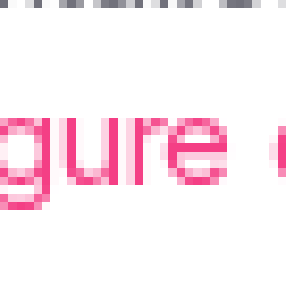
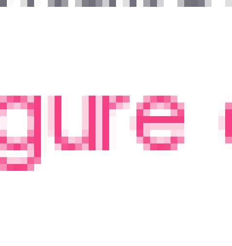
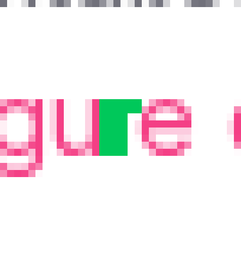

A deterministic harness for moving a page from Ember to Rails — and how we got there
This innovation week I was interested in exploring what it would take to migrate an Ember SPA "page" to a Rails SSR page. I want to share some of the process and the harness I got after a week spent together with Claude. One page got migrated, but that's the least interesting part.
I ran a similar experiment once before and it was a complete whack-a-mole. I got to 90% of a page quickly, and then the last 10% was a mess — because I had no way to tell what was still different.
Ember is the specification, and sameness is measured rather than reviewed.
The reason for the "even where Rails is better" rule: a migration that also improves things is a migration
whose failures cannot be localised. When something looks wrong, you want exactly one explanation available
— "the migration is wrong" — not two.
Improvements happen. They happen deliberately, afterwards, as their own change, with a record of what was
found. Every accessibility finding we hit got written into the manifest rather than fixed on the spot.
Chapter 1 — How it started
Turns out, comparing real application pages isn't trivial. In a day we got to a plausible plan, but at over 8,000 lines I refused to review any more iterations of it. The best decision this week came from being lazy.
Building the wrong thing is expensive, but so is planning something that can't be built. I moved on to proving an imperfect plan instead.
Worth being honest about the ratio. Some of it is defensible — most of that prose is why, which
code can't carry, and it's the reason a second person can pick this up. But it was still too much, and we
only found that out by building.
There are 91 decisions in the log now. Each one is a crossroads with the reasoning attached, including the
ones where the reasoning turned out to be wrong.
What the plan was
Diff the trees. Diff the styles. Diff the pixels.
Where most time was spent
Every one learned by being violated first: right implementation, declared data, a stable environment, a baseline that isn't quietly describing something else.
The comparators turned out to be the easy part.
Ninety-one decisions are on the record. Eight of them are about how to compare. Thirty-two are about whether the thing measured is the thing meant.
The sharpest example is the pixel noise floor. An earlier spike concluded that ~3% differing pixels is
simply the inherent noise of comparing two implementations, and that no threshold and no pixelmatch option
moved it. Those measurements were careful and the conclusion followed from them.
It was still wrong. It was the noise floor of that capture design — two browser contexts,
photographed separately. Photograph both implementations from the same context in the same session and the
measured floor is zero. Two months of tuning the comparator, and the problem was in the precondition.
If asked how the eight and the thirty-two are counted: by hand, and it's a judgement call at the
margins — two or three could go either way. The ratio isn't. It was 5 against 14 in the first
third of the log and 8 against 32 by the end, so the gap widened as the harness got more real.
Chapter 2
Four gates, two instruments, one command
bin/ssr-migration/verify all settings-overview # every stage, stopping at the first failure
bin/ssr-migration/verify aria settings-overview # just one| Stage | Kind | What it compares | Cost |
|---|---|---|---|
| static | gate | Lint, formatting, routing, translation keys, N+1 queries | ~87s |
| conformance | gate | Behaviour — one spec, run against both implementations | ~45s |
| aria | gate | The accessibility tree: content, order, roles, names | ~8.5s |
| layout | gate | Rendered geometry and computed style, against a budget | ~8.6s |
| interaction | instrument | What changes in the tree when a control is used | — |
| photo | instrument | Pixels | ~25s |
Gates fail the build. Instruments report and a human decides. A check that produces judgement calls is a check that will eventually be tuned until it passes too leniently.
The order isn't arbitrary: an early failure usually explains everything below it, so the stack stops at the
first red rather than handing you four reports of one cause.
Note the cost column. The two cheapest gates are, as it turns out, the two that catch almost everything.
We'll get to how we know that.
My first idea was a perfect DOM diff. But requiring identical markup is fragile, forces us to carry over every blemish, and — worse — sets us up for a transliteration rather than idiomatic Rails anyone would want to maintain.
- heading "Settings guide" [level=1]
- button "Set up departments and roles":
- checkbox "Set up departments and roles"
- text: Set up departments and roles
- paragraph:
- text: Working with departments is a great way to organize your entire Teamtailor account…
- link "Configure departments and roles →":
- /url: /companies/golden/settings/organization/departments
Playwright ships with aria_snapshot, which gives us the content of a page without losing what
only a screen reader would hear. It's fast, and it leaves us the implementation freedom we need.
This is the one gate that cannot be dropped. When we mutation-tested — coming up — there was exactly one
planted bug that a single gate caught alone, and it was this: a changed href.
It's also where most first attempts fail, and almost always for the same reason: an icon-only control with
no accessible name. That's a real finding, not a nuisance. If the tree can't name it, no assistive
technology can either.
The layout gate compares every computed style and every rect. But it can't walk the two trees in step — not requiring identical markup was the whole point. So it matches by identity: role, accessible name, text, at several strengths.
Then it reports how many elements it could only match by appearance. On this page, 39. That number is the gate auditing itself — if it climbs, more of the verdict is resting on resemblance.
link "Configure departments and roles →"
x left=722.09 right=722.08The entire remaining difference between the two implementations, at zero tolerance.
Two rules keep the report readable. A property divergence is named at the outermost
element it starts from; geometry is reported at its frontier and counted below it — "and 14 elements
inside those". One wrong container moves everything inside it, and a list of forty consequences is a
worse report than the one cause.
And every finding carries a hint at what to go and read: a colour divergence says "check the theme
contract before hard-coding one", spacing says "a padding scale step, not an arbitrary value". That's
the part that saves the hours. Someone reading a named fix goes and fixes it; someone reading "trees
differ" goes and stares at two thousand lines of YAML.
On the code block: that really is the last one. 0.01 is the smallest number the sweep can record — it
rounds rects to two decimals — so this is a value landing either side of a rounding boundary, and the
rasteriser has to pick a whole pixel column. I found it with the pixel instrument and localised it with
this gate at zero tolerance. No waiver. It stays on the report.
Not even comparable to the first whack-a-mole spike where tens, if not hundreds, of small rendering issues took forever to resolve 🤩!
Worth saying out loud: no human had reviewed this when the gates went green. The first review comment on
the page was about naming, not about rendering.
Everything on the previous four slides is what made that possible — and none of it is possible unless the
same URL can answer with either implementation. Which is the next slide.
migrated "/settings/overview",
to: "/settings/overviews#show",
ember_route: "settings.overview", # ⇒ flag :ssr_settings_overview
as: :settings_overviewIt's a routing constraint, not a redirect. The flag says no and the router falls through to the SPA, which serves the page byte for byte as it does today. The flag name is derived from the Ember route, so it can't drift.
?impl=rails | Open either implementation on demand. Everyone in dev and preview; staff only in production, so a customer can't pin themselves to one that's about to be deleted. |
data-implementation | Every document says which one rendered it. Every verifier asserts it on arrival. |
Cache-Control | private, no-cache, must-revalidate. One URL,
two possible answers — no shared cache may ever hold it. |
A page moves through four states: surveyed → spec-green-on-ember →
migrated → rolled-out.
The stamp is the one I'd defend hardest. It isn't a debugging convenience — it prevents the failure that
silently invalidates everything, which is a flag that didn't take effect and Ember being compared against
itself. Every gate would go green. The comparison would mean nothing. So every verifier checks the stamp
before it looks at anything else.
Neither implementation stamps itself, by the way — a middleware does it for both. The migrated page must
not know it has been migrated, and the SPA shell is a built artefact with no Rails template at all.
On the four states: the important one is the second. spec-green-on-ember is the pin — a
behaviour spec written against Ember and passing against Ember, committed before any Rails
exists. That's what stops the specification quietly becoming "whatever the Rails does".
A pixel diff can see things no other gate can. What it says on its own is useless: 0.002% of pixels differ. So the instrument clusters them into regions, boxes each one on the page, and then names the element it landed on — by looking it up in the rects the layout gate already measured.



36 pixels out of 2,077,744. One box, one letter, one sub-pixel of antialiasing, in “Configure departments and roles”.
The attribution is the whole reason this is worth building rather than opening two PNGs side by side. A
red box says where to look; the layout gate's sweep already knows what is there. Both
were measured from the same subtree root, so the two coordinate systems are one coordinate system — the
lookup is a scan of a few hundred rects and costs nothing.
Left and right on the right-hand side are the actual crops. I genuinely cannot tell them apart, and
neither can anyone else. Which is exactly why the photo is an instrument and not a gate: if this failed
the build, the only rational response would be to add a threshold, and once there's a threshold there's a
number someone tunes until the report goes quiet.
It also names its own contaminants. A flash message that appeared on one side and not the other used to
read as a real divergence; now the instrument says so.
Plant one bug in the finished Rails page. Ask every gate, separately, whether it noticed. Undo it, plant the next. Nine times. Separately matters: day to day the gates stop at the first red, because that's cheap — but then you never learn which of the ones behind it would also have caught the bug.
| Planted in the Rails | static | conformance | aria | layout | photo |
|---|---|---|---|---|---|
the h1 renamed | — | caught | caught | missed | caught |
| icon-only buttons lost their labels | — | caught | caught | caught | caught |
| a button rendered as a link | — | caught | caught | caught | missed |
| the page container shifted 24px | — | missed | missed | caught | caught |
| a text colour changed | — | missed | missed | caught | caught |
| a two-column section swapped end to end | — | missed | caught | caught | false green |
| two support links deleted | — | caught | caught | caught | caught |
a link's href pointed elsewhere | — | missed | caught | missed | missed |
| an N+1, a misspelled Stimulus target | caught | missed | — | — | — |
false green — worse than a miss. The camera reported identical, same hash while comparing only the top half of a page twice its height. That row is how we found out.
On the false green, if anyone asks: Playwright returns an image the full height of an element taller than
the viewport, but paints only the part that was actually inside the viewport. The blank remainder was
blank on both sides, so it subtracted to nothing — matching hash, half the page never looked at. That
green had already been quoted as evidence the migration was pixel-perfect.
It found three defects in the harness in one afternoon: that one, the conformance mode counting other
gates' examples as its own verdict, and a number the layout gate had always computed and never printed.
And it settled what each gate is actually for. Row 8 is the argument for the aria gate — one gate, alone.
Rows 4 and 5 are the argument for layout: among gates it's the only one that sees appearance at all.
The uncomfortable row is conformance: it caught nothing aria didn't, at five times the wall clock. But
that's a fact about the mutation set, not the gate — not one of these nine changed what a control
does when you press it. The honest conclusion is that this set under-samples behaviour.
Every gate was built on a good argument: this one can catch that. But that argument never tells you whether you need it — four gates can all catch the same bug. The question that decides whether a gate earns its four minutes is: if I delete it, does anything get through?
You can't answer that by reading the code or by arguing about it. You break the page on purpose and write down who noticed.
| aria | Delete it and a whole class of bug goes invisible — a link silently pointing at another host. keep |
| layout | The only gate that sees appearance at all. A 24px shift, a changed colour. keep |
| conformance | Written first, trusted most, five times the wall clock — and it caught nothing aria didn't. unproven |
Mutation-test the gates before the second page, not after the tenth.
Be careful with the conformance row — I'm not saying delete it. Not one of the nine planted bugs changed
what a control does when you press it, and that's the only thing conformance is for. The honest
reading is that the mutation set under-samples behaviour, so conformance is the one gate still resting on
an argument rather than a measurement. That's a to-do, not a verdict.
This generalises well past this project. Anything whose job is to catch problems — a linter, a test suite,
a review checklist — accumulates checks that were each individually justified and never jointly measured.
You can argue about what they could catch forever. Introducing the problems on purpose is the only thing
that tells you which ones are carrying their weight.
Chapter 3
Primitives, surfaces, pages — and about 200 features to go
Each shared thing is migrated once, on demand, by the first page that needs it — never speculatively. The first page into a section pays for both levels of chrome. That cost is real, front-loaded, and paid once.
This is the answer to "you migrated one page, so what". Page one of Settings cost the global banner, the
settings sidebar, and seven primitives. Page two costs a manifest, a spec and a template — everything
underneath it is already there and already proven.
The scale, if anyone asks: the router declares 491 routes across 692 template files, but four shared
generators are mounted over and over — the candidate flyout alone appears 20 times. Deduplicated, it's
roughly 200 distinct features across 450 mount points. And 43 primitives cover all of them.
The "every variant the application actually uses" bit isn't a promise, it's asserted. There's a demand map
that reports which primitive variants the app uses and where, and the parity spec has to cover them.
Both implementations are pointed at a golden tenant — a hand-curated company, planted through the app's own creation paths rather than poked into the database. Which sets the hard limit on all of this: a gate can only see a difference the tenant's data makes visible.
ember: height: calc(100dvh - 56px - var(--bannerHeight))
rails: height: calc(100dvh - 56px)
--bannerHeight is 0px unless a trial / 2FA / SMS-provider /
live-customer / impersonation strip is showing.
The golden tenant is in none of those five situations.
⇒ both sides compute the same number. No diff to report.The gate did its job perfectly. The fixture is part of the contract — a gap in the tenant is a gap in every gate at once.
I like this one because nothing was broken. The layout gate is the only gate that sees geometry, it was
pointed at exactly the right element, and it correctly reported no difference. The tenant just never put
the page into the state where the difference exists.
So it doesn't become a verifier change. It becomes a declared entry in the manifest that blocks the page
from reaching rolled-out until those alert strips are actually built. The blind spot is
written down rather than closed, because we can't close it yet.
There's a second one just like it: an unread-notifications badge a person spotted by eye that no gate can
see. We chased it, and the count arrives over a live socket — so it can never be planted into a fixture at
all, no matter how much the tenant grows.
The tenant's gaps are one limit. Here are the other three, written down as prominently as the capabilities.
A harness that doesn't say what it can't see is worse than no harness, because people trust it. So this is
written down as prominently as the capabilities are.
The refusal message is deliberate too. It doesn't fail with a diff of two machines — it declines to
compare, and tells you to re-capture in the container.
The product code
The page, seven primitives, two surfaces, the controllers and a little Stimulus.
The harness
6,705 of harness and 7,930 of specs that measure the harness itself.
Five times more machinery than the migrated page — and that ratio is the entire bet. It's paid once; the next page pays for a manifest, a spec and a template.
If that ratio doesn't invert over the next two or three pages, the experiment has failed and we should say so out loud. That's the number I'd want us to check back on.
What would you plant, that none of the nine did?